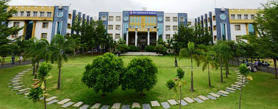

The Department of Computer Science & Engineering has started its UG Program B.Tech(CSE)from the year 1999 with an intake of 40.
At present the department has expanded to 240.
B.Tech(CSE) program first accredited by NBA in 2011. Later B.Tech(CSE) reaccredited in 2018.
Presently the program is accredited by NBA under Tier-1 from 2022 for a period of three years.
The Department of CSE is a hub of activities with students having the opportunity to truly engage themselves in active learning through effective participation in Workshops, Seminars, Certification Programs, Hackathons, Tech-Fests, and R&D initiatives. To enhance the knowledge levels of students through self learning the department has various Technical Clubs. The department focuses on students to advance, evolve and enhance Computer Science and Engineering fundamentals to build the intellectual capital of the society.
DSS
GDSC
SHE CODERS